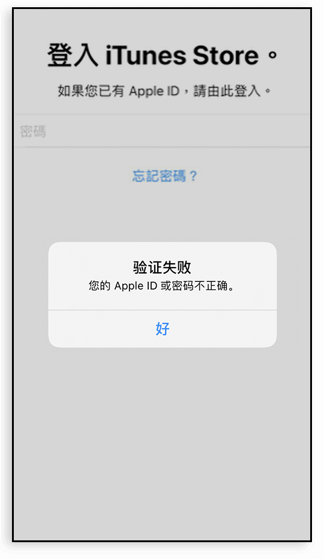

App
不可用
遇到这种情况请首先检查您登录的 Apple ID 地区是否处于 <中国大陆>；或者是否刚切换过地区，Apple 可能还没完成信息同步；
解决办法：重新退出登录 <香港 Apple ID>，再进行下载。
验证失败
这种错误场景会出现在您使用过 <Apple ID A> 下载赛盾VPN，然后使用 <Apple ID B> 进行版本更新；
解决办法：删除旧版本，重新安装新版本。

现在不能购买此项目
遇到此情况可能说明您的手机中还存在赛盾VPN 的 <历史旧版本>，它会与 App Store 版本产生冲突。
解决办法：删除旧版本，重新安装新版本。
此项目已不再提供
遇到此情况可能说明您的手机中还存在赛盾VPN 的 <历史旧版本>，它会与 App Store 版本产生冲突。
解决办法：删除旧版本，重新安装新版本。
不再提供“赛盾VPN”
遇到此情况可能说明您的手机中还存在赛盾VPN 的 <历史旧版本> ，它会与 App Store 版本产生冲突。
解决办法：删除旧版本，重新安装新版本。